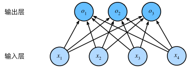

Pytorch深度学习-第五节：简单神经网络
基础知识
损失函数
损失函数（loss function）能够量化⽬标的实际值与预测值之间的差距。通常我们会选择⾮负数作为损失，且数值越小表示损失越小，完美预测时的损失为$0$。
在训练模型时，我们希望寻找⼀组参数$(w^∗, b^∗)$，这组参数能最小化在所有训练样本上的总损失。如下式：
解析解
解可以用一个公式简单地表达出来，这类解叫作解析解，如线性模型就有解析解。但大部分模型并不存在解析解。
随机梯度下降
梯度下降最简单的用法是计算损失函数（数据集中所有样本的损失均值）关于模型参数的导数（在这里也可以称为梯度）。
但实际中的执行可能会⾮常慢：因为在每⼀次更新参数之前，我们必须遍历整个数据集。因此，我们通常会在每次需要计算更新的时候随机抽取⼀小批样本，这种变体叫做小批量随机梯度下降。

$B$表⽰每个小批量中的样本数，也称为批量大小（batch size）。$η$表示学习率（learning rate）。
算法的步骤如下：
- 初始化模型参数的值
- 从数据集中随机抽取小批量样本且在负梯度的方向上更新参数，并不断迭代这⼀步骤
神经网络图
只显示连接模式，即只显示每个输⼊如何连接到输出，隐去了权重和偏置的值。
如图所示的神经网络中，输入为$x_1, …,x_d$，因此特征维度为$d$。网络的输出为$o_1$，因此输出层中的输出数为$1$。因为输入层不计数，因此该神经网络的层数为1，也称为单层神经网络。
全连接层（稠密层）
每个输⼊都与每个输出相连，我们将这种变换称为全连接层（fully-connected layer）或称为稠密层（dense layer）。如图：

1.4中的图片也是全连接层。
矢量化加速
在训练我们的模型时，我们经常希望能够同时处理整个小批量的样本。为了实现这⼀点，我们需要利用线性代数库对计算进行矢量化，而不是在Python中编写开销⾼昂的for循环。
---------------------本文结束---------------------